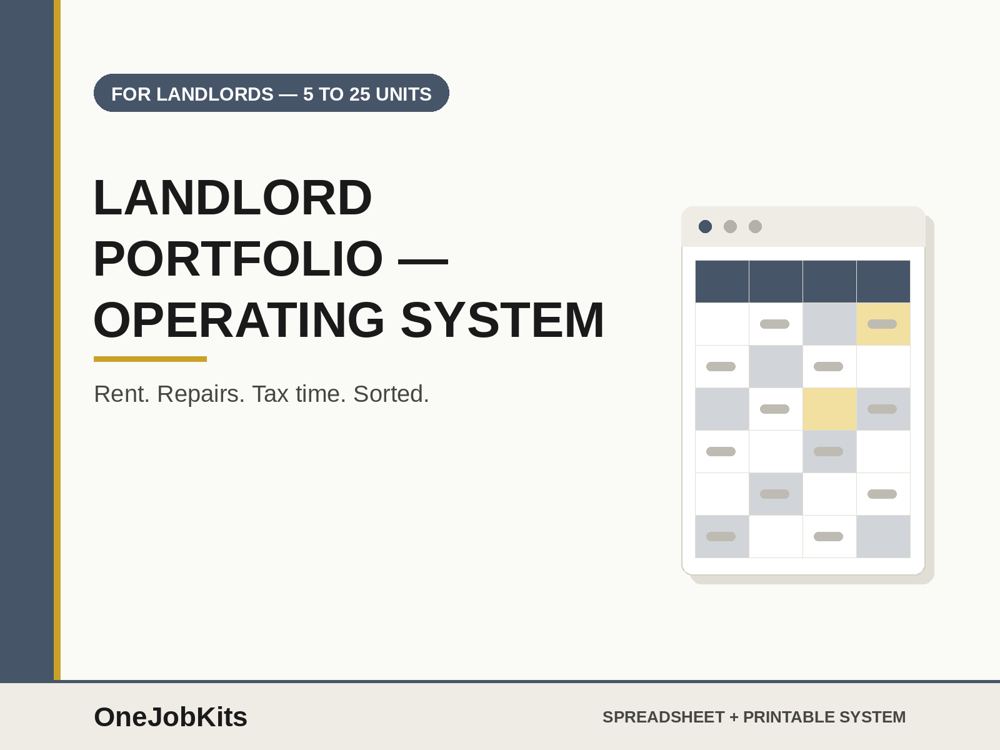

OneJobKits · Kit #14
Landlord Rental OS — landlord spreadsheet template

Let's be honest first, the way the product itself is: if all you need is a rent tracker, cheap ones exist and some are good. A serious landlord spreadsheet template search usually means something bigger — you have 5 to 25 units, you run everything yourself, and the money workbook, the tenant paperwork, the maintenance system and the tax-time organiser have stopped fitting in separate files.
This page gives you the tax-time piece free: the document checklist preparers ask for, organised by property. Below it is the whole operating system it comes from — a 12-tab portfolio workbook, the tenant document kit, and a Schedule E organiser that makes January a printout instead of an excavation. It is an organisational system and document template pack only — not legal, tax or accounting advice.
Free download — start with the Tax-Time Document Checklist for Landlords
The Tax-Time Document Checklist for Landlords is a 3-page fillable PDF: every document and total a tax preparer asks a small landlord for, organised by property. The Gumroad free download also includes the Per-Property Profit Mini Sheet — one page per portfolio: rents in, five cost lines, net out per property.
Download the free Tax-Time Checklist (PDF)Get it (with the Mini Sheet) on Gumroad
What the checklist does not do: it survives one tax season. The full system below runs the portfolio all year — so next January's documents already exist, tagged and totalled, instead of being reconstructed from bank statements and memory.
What's inside the full system
- Portfolio workbook (spreadsheet, 12 tabs) — START HERE · Property & Unit Roster — properties and units with the IDs every rollup follows · Rent Roll — rents pull from the roster; you add tenant, lease dates, deposit · Payment & Arrears Log — 400 rows; balance owed and days late calculate; a missed payment is a 0 row, which is what makes arrears honest · Expense Register — 400 rows tagged with the Schedule E category per property and unit · Per-Property P&L — set the Year once: rents, other income, expenses, net, expense ratio, net per unit, per property plus portfolio total · Portfolio Dashboard — the year at a glance: occupancy and vacancy rate, scheduled rent, income, expenses, net, arrears outstanding, vacancy days and lost rent, open work orders, vendors with expired insurance, overdue maintenance · Vacancy & Turnover Tracker — days vacant, lost rent and total turnover cost per unit · Work-Order Log — 200 rows of per-unit maintenance history · Vendor Roster — insurance-expiry flags (EXPIRED / ≤30 DAYS / Current) · Recurring Maintenance Calendar — ten standard tasks pre-loaded, next-due dates and OVERDUE flags calculated · Schedule E Organiser — the year laid out on Schedule E's own lines 3–19, per property, ready for your preparer
- Tenant Document Kit (Word + fillable PDF, 10 pages) — screening criteria worksheet, screening log, application tracker, move-in/move-out condition report with photo-log pages, rent-increase / entry / lease-violation notice templates with state prompts, and a tenant ledger statement — attorney-review footer on every page
- Tax Season Checklist (fillable PDF, 4 pages) — a per-property document block (repeated for 3 properties) plus a whole-portfolio documents page
- Setup Guide (PDF, 9 pages) — migration in steps or one sitting, the Schedule E categories in plain words, a tour of the 12 tabs, the example year walked through, weekly / month-end / tax-season routines, a first-year calendar, and the ten bookkeeping mistakes the system prevents
- Worked example file — the system filled with a fictional 8-unit, 3-property portfolio for the full year 2025 (shown below)
- Pro ($189) adds: the STR Units Module — STR Revenue Log and STR Per-Unit P&L tabs for units you run as short-term rentals
A filled example — so you can see the finished thing
The kit's own worked example runs a fictional portfolio — 8 units across 3 properties in Des Moines and Ames, Iowa — through the full year 2025, with the Year set to 2025 so every rollup shows finished numbers. The portfolio is invented; the workload it demonstrates is real:
| From the example file | What is populated |
|---|---|
| Payment & Arrears Log | 95 payment rows across the year — including the honest 0 rows for missed payments, so balances and days-late are real |
| Expense Register | 83 expense rows, each tagged to its Schedule E category and its property or unit — the raw material the Organiser totals in January |
| Vacancy & Turnover | Real turns worked end to end: vacated and re-rented dates producing days vacant, lost rent and total turnover cost per unit |
| Work orders, vendors, maintenance | The year's work orders with vendors and costs, vendor insurance dates with their flags, and the recurring calendar running its ten standard tasks |
| Schedule E Organiser | The same year's data laid out per property on lines 3–19 — the handoff page your preparer actually wants |
That is the difference between a tracker and an operating system: the year is run once, in the open, and tax season is just the year printed out.
Who it is for
Owner-managers with 5–25 units who self-manage and do their own books — landlords professionalising past the single-tracker stage, including mixed portfolios with a few short-term units (Pro).
Who it is not for
Landlords with 1–4 units (a simple tracker honestly serves you), anyone wanting legal advice or state-specific lease documents, and anyone wanting tenant-screening decisions made for them — the screening log records your criteria and results; it decides nothing.
Questions buyers ask
- I have 2 units — is this for me?
- Honestly, no. With 1–4 units a simple rent tracker serves you and this would be overkill — the store's own listing says so. This system earns its price at 5–25 units, where per-property profit, arrears across doors, vacancy costs and tax-time organisation stop fitting in one simple sheet.
- Does the Schedule E organiser file my taxes?
- No. It organises: set the year and each property's rents received and every expense category are laid out on Schedule E's own lines (3–19), with totals and net per property, ready to hand to a tax preparer. Your expenses are tagged to Schedule E categories (IRS lines 5–19) in the register all year, so January is a printout, not an excavation. A tax professional reviews your Schedule E before filing — the system says so itself.
- Are the notices and documents legal in my state?
- They are general US templates with [STATE PROMPT] markers exactly where the law varies — notice periods, entry rules, deposit deadlines and screening limits are state- and city-specific. Every page of the Document Kit carries the attorney-review footer: have an attorney review any notice or document before use. The screening log records your criteria and your results; it makes no screening decisions.
- How do arrears stay honest?
- By a rule built into the Payment & Arrears Log: a missed payment is entered as a row with Amount Paid 0 and no date received. Balance owed and days late then calculate themselves per unit, and the Dashboard carries arrears outstanding for the portfolio — nobody has to remember who is behind; the log knows.
- Some of my units are short-term rentals — what does Pro add?
- The STR Units Module: an STR Revenue Log (one row per stay — gross from nights × nightly rate plus cleaning fee, net after platform fees) and an STR Per-Unit P&L for the year — stays, nights, gross, fees, net revenue, that unit's STR expenses and average nightly rate — so short-term units sit inside the same portfolio system as the long-term ones.
- How does the maintenance side work?
- Three linked pieces: the Work-Order Log (200 rows — category, vendor, priority, status, cost — building a per-unit maintenance history), the Vendor Roster (rates, contacts and insurance expiry, with the status flagging EXPIRED or EXPIRING within 30 days by itself), and the Recurring Maintenance Calendar — ten standard tasks pre-loaded, with frequency driving next-due dates and OVERDUE / DUE flags, so the visits that only happen if scheduled actually happen.
- What do the free downloads cover, and what does the full system add?
- Free on this page: the Tax-Time Document Checklist (fillable, organised by property) — and the Gumroad free download adds the Per-Property Profit Mini Sheet: rents in, five cost lines, net out per property. The full system runs the portfolio all year those documents describe: rent roll, payments and arrears, per-property P&L, vacancy and turnover costs, the tenant document kit, maintenance and vendors, and the Schedule E organiser.
Prices
Standard: $149 · Pro (adds the STR Units Module): $189 — one-time payment, digital download. No subscription; the files are yours.
Can't find the kit you need?
We build it. Ask us — first asker gets it at half the shelf price. Tell us the job at onejobkits.com and we will build the kit for it.
Related kits
Please know: this is an organisational system and document template pack only — not legal, tax, or accounting advice. Landlord-tenant law is state- and city-specific; have an attorney review any notice or document before use, and a tax professional review your Schedule E before filing. Not affiliated with the IRS or any screening service. The example portfolio, tenants and numbers are fictional.